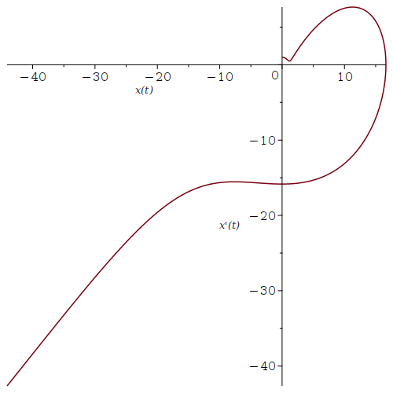

Systems of linear ODE
We have divided our introduction to the use of Maple to study systems of ODE into two documents. The present document covers only systems of linear ODE. The second document covers, as its title suggests, the systems of nonlinear ODE. It is not a mathematical reason that justifies our decision to split our study of systems of ODE into two documents but it is a software issue. We are using MathJax to process the mathematical formulae. Combining both documents will produce a document that is too slow to load in most browsers.
General Concepts
Consider the system of ODE \(X'(t) = f(t,X(t))\) where \(\displaystyle f:\mathbb{R} \times \mathbb{R}^n \to \mathbb{R}^n\). Our goal is to find a solution of this system of ODE satisfying a given initial condition: namely, to find a differentiable function \(\displaystyle X:I \to \mathbb{R}^n\) defined on an open interval \(I \subset \mathbb{R}\) containing the origin and such that \(X\) satisfies this system of ODE with a given initial condition \(X(0) = X_0\). The theory says that there always exists a unique solution if \(f\) is continuous and locally Lipshitz with respect to the variable \(X\). If \(f\) does not depend on the time \(t\), then we say that the system of ODE is autonomous. In this case, if \(X\) is a solution of the system of ODE, then \(f(X(t))\) is the direction and velocity of \(X\) at time \(t\). In particular, \(f(X(t))\) is tangent to the orbit \(\{ X(t): t \in I\}\) at time \(t\).
For autonomous systems of two ODE, it is traditional to draw the vector field associated to the system of ODE to get a qualitative picture of the global behaviour of the orbits of this system. For many (equally spaced) points \(X\) in the plane, we draw from each of these points \(X\) a vector in the direction \(f(X)\). Sometimes the length of the vector drawn is proportional to the norm of \(f(X)\).
Systems of autonomous linear ODE with constant coefficients
A system of ODE of the form \(X'(t) = A X(t)\), where \(A\) is a constant \(n \times n\) matrix, is called a (homogeneous) linear system of ODE. The theoretical solution of this system is \(\displaystyle X(t) = e^{t A} X(0)\), where the exponential of a square matrix \(B\) is defined by the series \(\displaystyle e^B = \sum_{n=0}^\infty \frac{1}{n!} B^n\). This series always converges. The notion of convergence for series of matrices is independent of the induced norm of matrices chosen.
Example: We consider the matrix defined by the following command in Maple.
> with(LinearAlgebra): A := Matrix([[2,-1],[1,2]]);\[ A := \begin{bmatrix} 2 & -1 \\ 1 & 2 \end{bmatrix} \]
The exponential of this matrix is given by the following command.
> expA := MatrixExponential(A);\[ expA := \begin{bmatrix} e^2 \cos(1) & -e^2 \sin(1) \\ e^2 \sin(1) & e^2 \cos(1) \end{bmatrix} \]
Moreover, \(\displaystyle e^{tA}\) is given by the following command.
> exptA := MatrixExponential(A,t);\[ exptA := \begin{bmatrix} e^{2t} \cos(t) & -e^{2t} \sin(t) \\ e^{2t} \sin(t) & e^{2t} \cos(t) \end{bmatrix} \]
We can use the function dsolve() to solve the system of homogeneous linear system of ODE \(X'(t) = A X(t)\). We represent this system of ODE in Maple as it follows.
> eq1 := {diff(x1(t),t) = 2*x1(t) - x2(t), diff(x2(t),t) = x1(t) + 2*x2(t)};
\[
eq1 := \left\{ \frac{\text{d}}{\text{d}t} x1(1) = 2 x1(1) - x2(t) , \frac{\text{d}}{\text{d}t} x2(t) = x1(t) + 2 x2(t) \right\}
\]
> X := dsolve(eq1, {x1(t), x2(t)});
\[
X := \left\{ x1(t) = e^{2t} (\_C2 \cos(t) + \_C1 \sin(t), x2(t) = -e^{2t} ( \cos(t)\_C1 - \sin(t) \_C2 \right\}
\]
where _C1 and _C2 are arbitrary constants. This expression is equal to \(\displaystyle e^{tA} \begin{bmatrix} \_C2 \\ -\_C1 \end{bmatrix}\).
Example (continued) : We can also solve \(X'(t) = A X(t)\) with the initial condition \(\displaystyle X(0) = \begin{bmatrix} 2 \\ 3 \end{bmatrix}\).
> eq2 := eq1 union {x1(0)=2,x2(0)=3};
\[
eq2 := \left\{ \frac{\text{d}}{\text{d}t} x1(1) = 2 x1(1) - x2(t) , \frac{\text{d}}{\text{d}t} x2(t) = x1(t) + 2 x2(t) , x1(0) = 2, x2(0) = 3\right\}
\]
The solution of this system is given by the following command.
> X := dsolve(eq2,{x1(t),x2(t)});
\[
X := \left\{ x1(t) = e^{2t} (2 \cos(t) - 3 \sin(t) ), x2(t) = -e^{2t} ( -3 \cos(t) - 2 \sin(t) )\right\}
\]
It is the case with _C1 = -3 and _C2 = 2 in the general solution above.
We can use Maple to draw the orbit of this solution.
> X1:=subs(X,x1(t)); X2:=subs(X,x2(t)); plot([X1,X2,t=-1..5],axes=FRAME,labels=['x1','x2']);\[ \begin{split} & x1(t) = e^{2t} (2 \cos(t) - 3 \sin(t) ) \\ & x2(t) = -e^{2t} ( -3 \cos(t) - 2 \sin(t) ) \end{split} \]

To evaluate the solution of an homogeneous linear system of ODE at
various values of the independent variable \(t\), we have to evaluate
\(\displaystyle e^{tA} X_0\) at several values of \(t\). In general,
it is difficult and time consuming to compute the exponential
\(\displaystyle e^{tA}\) when the dimensions of the square matrix \(A\)
are large. There are however some nice results from linear algebra
that help us (and the software) to compute this exponential. For
instance, it is possible to find an invertible matrix
\(U\) such that \(A = U D U^{-1}\) where \(D\) is a block diagonal
matrix (e.g. a Jordan normal form or a real canonical form). We then
have that \(\displaystyle e^{tA} = U e^{tD} V\) where
\(\displaystyle e^{tD}\) is much easier and faster to
compute than \(\displaystyle e^{tA}\) because \(D\) has zero
components off the (block) diagonal (at lot of zero components). It is
easy
to multiply matrices with a lot of zero
components at known locations.
We will not consider the general theory of matrix decomposition in this document. We will consider only \(2 \times 2\) matrices. In this case, there could be:
- one or two real eigenvalues with two linearly independent real eigenvectors associates to them,
- only one real eigenvalue with only one linearly independent real eigenvector (up to a scalar multiple) associated to it, or
- two complex conjugated eigenvalues (i.e. non-zero imaginary part) with two linearly independent complex eigenvectors associates to them.
Two Linearly Independent Real Eigenvectors
Consider the linear system of ODE defined in Maple by the following command.
> eq3 := {diff(x1(t),t)=-4*x1(t)+ 2*x2(t), diff(x2(t),t)=-1*x1(t)-x2(t)};
\[
eq3 := \left\{ \frac{\text{d}}{\text{d}t} x1(t) = 4\; x1(t) + 2\; x2(t) ,
\frac{\text{d}}{\text{d}t} x2(t) = - x1(t) - x2(t) \right\}
\]
The matrix of coefficients of this linear system of ODE is given below.
> A := Matrix([[-4,2],[-1,-1]]);\[ A := \begin{bmatrix}-4 & 2 \\ -1 & -1 \end{bmatrix} \]
The eigenvalues and eigenvectors of A are given by the following commands.
> with(LinearAlgebra): Eigenvectors(A);\[ \begin{bmatrix}-3 \\ -2 \end{bmatrix}, \begin{bmatrix} 2 & 1 \\ 1 & 1 \end{bmatrix} \]
We have two eigenvalues \(-3\) and \(-2\). An eigenvector associated to the eigenvalue \(-3\) is given by the first column of the \(2\times 2\) matrix and an eigenvector associate to the eigenvalue \(-2\) is given by the second column. This \(2\times 2\) matrix can be selected as the matrix \(U\) in the decomposition of \(A\) presented in the introduction of this section. We use dsolve() to solve this linear system of ODE. We are mainly interested in the qualitative aspect of the solutions. So, we draw the vector field associated to this system.
> with(DEtools): DEplot(eq3,[x1(t),x2(t)],t=0..5, [[x1(0)=0.5,x2(0)=0], [x1(0)=-0.5,x2(0)=-0.1]], linecolor=[blue,red], thickness=1,color=green, arrows=small,stepsize=0.01);

We have also drawn two orbits associated to the solutions with initial condition \(\displaystyle \begin{bmatrix}0.5 \\ 0 \end{bmatrix}\) (in blue) and \(\displaystyle \begin{bmatrix} -0.5 \\ 0 \end{bmatrix}\) (in red) at time \(t=0\). As can be seen from the vector field, all the solutions converge toward the origin as \( t \to \infty\). This is typical of linear system of ODE with two negative eigenvalues. The origin is called a sink or stable node. If the two eigenvalues had been positive, we would have observed that all solutions go away from the origin as \(t \to \infty\). The origin is then called a source or unstable node.
Note: Another way to draw the vector field is with the function dfieldplot().
> dfieldplot(eq3,[x1(t),x2(t)],t=-2..2,x1=-1..1,x2=-1..1):
We leave to the reader the pleasure of trying this command. We also leave to the reader the pleasure of discovering the qualitative behaviour of the orbits of the linear system of ODE when one of the eigenvalues is positive and the other is negative. The origin is then called a saddle point.
Only One Linearly Independent Eigenvector (up to a scalar multiple)
We must have a real eigenvalue of algebraic multiplicity two and geometric multiplicity one. Consider the homogeneous linear system of ODE defined by the following Maple command.
> eq4:={diff(x1(t),t)=3*x1(t)+x2(t), diff(x2(t),t)=3*x2(t)};
\[
eq4 := \left\{ \frac{\text{d}}{\text{d}t} x1(t) = 3\; x1(t) + x2(t) ,
\frac{\text{d}}{\text{d}t} x2(t) = 3\; x2(t) \right\}
\]
The matrix of coefficients of this linear system of ODE is given below.
> A := Matrix([[3,1],[0,3]]);\[ A := \begin{bmatrix}3 & 1 \\ 0 & 3 \end{bmatrix} \]
The eigenvalues and eigenvectors of the matrix A are given by the following command.
> Eigenvectors(A);\[ \begin{bmatrix} 3 \\ 3 \end{bmatrix}, \begin{bmatrix} 1 & 0 \\ 0 & 0 \end{bmatrix} \]
There is only one eigenvalue (i.e. \(3\)) of algebraic multiplicity two and geometric multiplicity one. To get a qualitative picture of the global behaviour of the orbits of this linear system of ODE, we draw in the same figure its vector field and the orbits of some particular solutions.
> DEplot(eq4,[x1(t),x2(t)],t=-1..1,[[x1(0)=2,x2(0)=-3],[x1(0)=-2,x2(0)=2]], linecolor=[blue,green],thickness=1,stepsize=0.01);

As can be seen from the vector field, all the solutions go away from the origin as \(t \to \infty\). The origin is a unstable node. If the eigenvalue had been negative, then all the solutions would have converged to the origin as \(t \to \infty\). The origin would then be a stable node.
Two Complex Conjugate Eigenvalues (i.e. non-zero imaginary part)
Consider the homogeneous system of ODE defined by the following Maple command.
> eq5:={diff(x1(t),t)=-2*x1(t)-x2(t), diff(x2(t),t)=x1(t)-2*x2(t)};
\[
eq5 := \left\{ \frac{\text{d}}{\text{d}t} x1(t) = -0.2\; x1(t) - x2(t) ,
\frac{\text{d}}{\text{d}t} x2(t) = x1(t) - 0.2\; x2(t) \right\}
\]
The matrix of coefficients of this linear system of ODE is given below.
> A := Matrix([[-1/5,-1],[1,-1/5]]);\[ A := \begin{bmatrix} -\frac{1}{5} & -1 \\ 1 & -\frac{1}{5} \end{bmatrix} \]
The eigenvalues and eigenvectors of the matrix A are given by the following command.
> with(LinearAlgebra): Eigenvectors(A);\[ \begin{bmatrix}-\frac{1}{5} + I \\ -\frac{1}{5} - I \end{bmatrix}, \begin{bmatrix} I & 1 \\ -I & 1 \end{bmatrix} \]
There are two complex conjugated eigenvectors to which are associated two linearly independent eigenvectors. The students learn in an introductory ODE course that the general solution involves terms of the form \(\displaystyle e^{a t}\cos(bt)\) and \(\displaystyle e^{at}\sin(bt)\) if \(a \pm b i\) are the complex conjugated eigenvalues.
> dsolve(eq5, {x1(t), x2(t)});
\[
\left\{ x1(t) = e^{-\frac{t}{5}} (\_C2 \cos(t) + \_C1 \sin(t)), x2(t) = -e^{-\frac{t}{5}} (\cos(t)\_C1 - \sin(t) \_C2) \right\}
\]
As we have done before, to get a qualitative image of the global behaviour of the orbits of this linear system of ODE, we draw in the same figure its vector field and the orbits of some particular solutions.
> DEplot(eq5,[x1(t),x2(t)],t=0..10,[[x1(0)=0.1,x2(0)=-0.1],[x1(0)=-0.1,x2(0)=0.1]], linecolor=[blue,green],thickness=1, stepsize=0.01);

As can be seen from the vector field, all the solutions converge toward the origin as \(t \to \infty\). The origin is called a stable spiral or stable focus. If the real part of the pair of complex conjugated eigenvalues had been positive, then all the solutions would have gone away from the origin as \(t \to \infty\). The original would then be called a unstable spiral or unstable focus.
Non-homogeneous and autonomous Linear Systems of ODE with constant coefficients
Consider the non-homogeneous linear system of ODE defined by the following Maple command.
> eq6 := {diff(x1(t),t)=-2*x1(t)-2*x2(t)+sin(2*t), diff(x2(t),t)=4*x1(t)+2*x2(t)+cos(2*t)};
\[
eq6 := \left\{ \frac{\text{d}}{\text{d}t} x1(t) = -2\; x1(t) - 2\; x2(t) + \sin( 2t) ,
\frac{\text{d}}{\text{d}t} x2(t) = 4\; x1(t) + 2\; x2(t) + \cos(2 t) \right\}
\]
We can use dsolve() to find the general solution of this system of ODE but we are mainly interested in the qualitative behaviour of the orbits as \( t \to \infty\). Thus, we draw the orbits of some particular solutions.
> DEplot(eq6,[x1(t),x2(t)],t=0..5,[[x1(0)=1,x2(0)=-1],[x1(0)=-1,x2(0)=1],[x1(0)=2,x2(0)=2]], linecolor=[blue,green,red],thickness=1,stepsize=0.01,numpoints = 100, method = taylorseries);

It is interesting to note that none of the integration methods of Maple seem to be able to correctly draw orbits of solutions starting near the origin (at least, when this document was written).
Note: There exists an explicit formula for the general solution of a system of non-homogeneous linear ODE like the one that we have just considered. The reader can find it in most introductory textbook on ODE.
Reduction of the order of an ODE
It is possible to reduce an higher order ODE of the form
\[ y^{n}(t) + a_{n-1} y^{n-1}(t) + ... + a_1 y'(t) + a_0 y(t) = f(t) \]to a system of first order ODE. It suffices to define \(X_1= y, X_2= y', \ldots, X_n= y^{n-1}\) to get the system
\[ \begin{split} X_1'(t) &= X_2(t) \\ X_2'(t) &= X_3(t) \\ \ldots &\qquad \ldots \\ X_n'(t) &= y^{n}(t) = -a_{n-1} y^{n-1}(t) - ... - a_1 y'(t) - a_0 y(t) + f(t) \\ & = -a_{n-1} X_n(t) - ... - a_1 X_2(t) - a_0 X_1(t) + f(t) \end{split} \]Example We Consider the following system of springs

The mass of the first block is \(m_1=1\) gr and the mass of the second block is \(m_2=1\) gr. The spring constant for the first spring is \(k_1=6\), the spring constant for the second spring is \(k_2=2\), and the spring constant for third spring is \(k_3=3\). We suppose that there is no damping, that the second block is at rest initially and that the first block is given an initial speed of \(0.5\) m/s from its position at rest. We want to plot the position of each block in function of the time \(t\).
According to Newton's law Force equals mass times
acceleration
, we have that
where \(x_1(t)\) and \(x_2(t)\) are respectively the positions of the first and second block in function of the time \(t\). The origins for the \(x_1\) and \(x_2\) axes are determined by the positions of the blocks at rest. As explained above, we can reduce this systems of two linear second orders ODE to a system of four linear first order ODE with the substitution \(y_1 = x_1, y_2 = x_1' = y_1', y_3 = x_2\) and \(y_4 = x_2' = y_3'\). We get
\[ \begin{split} y_1'(t) &= y_2(t) \\ m_1 y_2'(t) &= -k_1 y_1(t) + k_2(y_3(t) - y_1(t)) \\ y_3'(t) &= y_4(t) \\ m_2 y_4'(t) &= -k_3 y_3(2) - k_2(y_3(t) - y_1(t)) \end{split} \]This system is represented in Maple by the following commands.
> restart: equ1 := diff(y1(t),t) = y2(t); equ2 := m1*diff(y2(t),t) = -k1*y1(t) + k2*(y3(t)-y1(t)); equ3 := diff(y3(t),t) = y4(t); equ4 := m2*diff(y4(t),t) = -k3*y3(t) - k2*(y3(t)-y1(t));\[ \begin{split} & equ1 := \frac{\text{d}}{\text{d}t} y1(t) = y2(t) \\ & equ2 := m1 \,\left( \frac{\text{d}}{\text{d}t} y2(t) \right) = -k1 y1(t) + k2 (y3(t) - y1(t)) \\ & equ3 := \frac{\text{d}}{\text{d}t} y3(t) = y4(t) \\ & equ4 := m2 \, \left( \frac{\text{d}}{\text{d}t} y4(t) \right) = -k3 y3(t) - k2 (y3(t) - y1(t)) \end{split} \]
If we subsided the values for the constants, then we get
> equ1p := equ1;
equ2p := subs({m1=1,m2=1,k1=6,k2=2,k3=3}, equ2);
equ3p := equ3;
equ4p := subs({m1=1,m2=1,k1=6,k2=2,k3=3}, equ4);
\[
\begin{split}
& equ1p := \frac{\text{d}}{\text{d}t} y1(t) = y2(t) \\
& equ2p := \frac{\text{d}}{\text{d}t} y2(t) = -8 y1(t) + 2 y3(t) \\
& equ3p := \frac{\text{d}}{\text{d}t} y3(t) = y4(t) \\
& equ4p := \frac{\text{d}}{\text{d}t} y4(t) = -5 y3(t) + 2 y1(t)
\end{split}
\]
The initial conditions are \( y_1(0) = x_1(0)=0, y_2(0) = x_1'(0)=0.5, y_3(0) = x_2(0)=0\) and \(y_4(0) = x2'(0)=0\). Hence, we get the following system in Maple.
> syst := {equ1p, equ2p, equ3p, equ4p, y1(0)=0, y2(0)=0.5, y3(0)=0, y4(0)=0};
\[
\begin{split}
& syst := \bigg\{ \frac{\text{d}}{\text{d}t} y1(t) = y2(t) ,
\frac{\text{d}}{\text{d}t} y2(t) = -8 y1(t) + 2 y3(t) ,
\frac{\text{d}}{\text{d}t} y3(t) = y4(2) , \\
& \frac{\text{d}}{\text{d}t} y4(t) = -5 y3(t) + 2 y1(t) ,
y1(0)=0, y2(0)=0.5, y3(0)=0, y4(0)=0 \bigg\}
\end{split}
\]
We solve this system and plot the graphs of \(x_1\) and \(x_2\) in the same figure for \(0 \leq t \leq 20\) seconds.
> sol := dsolve(syst,{y1(t),y2(t),y3(t),y4(t)}, type=numeric);
with(DEtools): with(plots):
plot1 := odeplot(sol,[t,y1(t)],0..10,color=blue,thickness=1):
plot2 := odeplot(sol,[t,y3(t)],0..10,color=green,thickness=1):
display({plot1,plot2},labels=["t","x1,x2"]);
\[
\begin{split}
& sol := \text{proc(x\_rkf45) \ldots end proc}
\end{split}
\]

We deduce from the figure above that \( t \mapsto (x_1(t),x_2(t))\) is periodic of period \(2\pi\). This can be proved by finding the explicit solution of the system of ODE. We can use the following Maple command to get this solution.
dsolve(syst,{y1(t),y2(t),y3(t),y4(t)});
\[
\begin{split}
&\bigg\{ y1(t) = \frac{\sin(2t)}{20} + \frac{2 \sin(3t)}{15}, y2(t)
= \frac{\cos(2 t)}{10} + \frac{2\cos(3t)}{5}, \\
&\qquad y3(t) = \frac{\sin(2t)}{10} - \frac{\sin(3t)}{15},
y4(t) = \frac{\cos(2t)}{5} - \frac{\cos(3t)}{5} \bigg\}
\end{split}
\]
Since 2 and 3 have no common factor, we find that the solution
\(t \mapsto (x_1(t),x_2(t)) \) is of period \(2\pi\). We leave it to
the reader to explore what happen for different initial conditions,
masses and spring constants. Do we always get periodic solutions?
Can the system be chaotic?
Systems of non-autonomous linear ODE
This is the situation where we have \(X'(t) = A(t) X(t)\). Thus, the right hand side of the system of ODE depends explicitly of \(t\). The previous theory cannot be applied in this case. We consider one example to illustrate how Maple can still be used to study such systems of ODE.
Example: We have seen in the document the second order ODE
\[ x''(t) + \cos(t) x(t) = 0 \ . \]This ODE can be reduced to the system of first-order ODE with the substitution \(X_1 = x\) and \(X_2 = x'\).
> eq1:= { diff(x1(t),t)=x2(t), diff(x2(t),t)=-cos(t)*x1(t)};
\[
eq1 := \left\{ \frac{\text{d}}{\text{d}t} x1(t) = x2(t), \frac{\text{d}}{\text{d} t} x2 = -\cos(t) x1(t) \right\}
\]
As usual, we will not look for the general solution of this system of ODE using the function dsolve() but we will instead find the numerical solution for a given initial condition in order to plot this solution.
> SYST := eq1 union {x1(0)=0,x2(0)=1}:
> X := dsolve(SYST,{x1(t),x2(t)},type=numeric,output=listprocedure);
\[
X := [t = proc(t) ... end\, proc, x1(t) = proc(t) ... end\, proc, x2(t) = proc(t) ... end\, proc]
\]
We plot the orbit \( \{ (x_1(t),x_2(t)) : 0 \leq t \leq 3\pi\} \) associated to the intinial condition \( (x_1(0),x_2(0)) = (0,1) \).
> with(plots): odeplot(X,[x1(t),x2(t)],0..3*Pi,labels=[`x(t)`,`x'(t)`]);

We have already encountered this orbit before. It is the plot of a part of the orbit \( \{ (x(t), x'(t)) : t\in \mathbb{R} \} \) associated to the initial conditions \(x(0) = 0\) et \(x'(0) = 1\) for the second ordre ODE that we presented in the first example of the document .